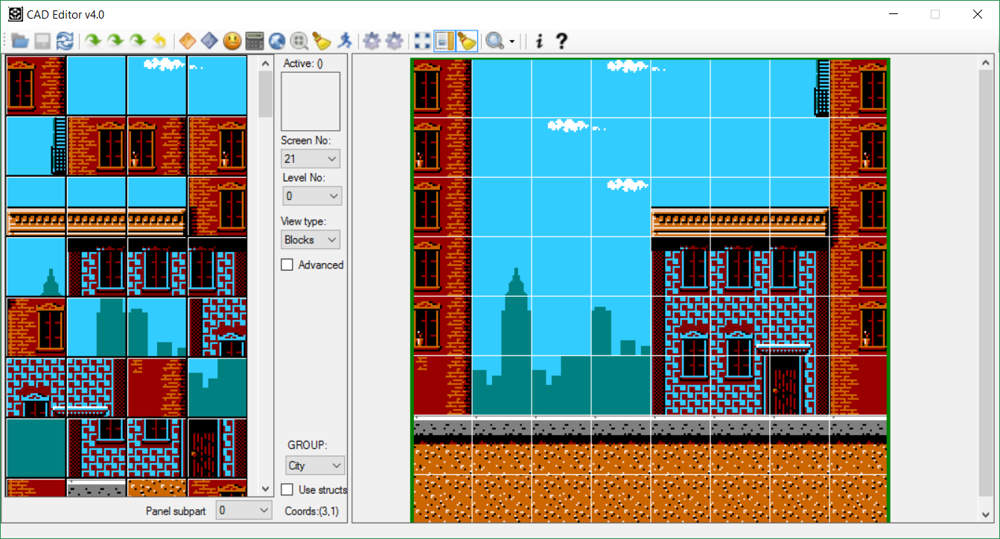
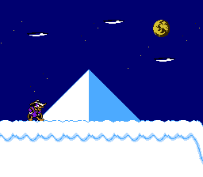
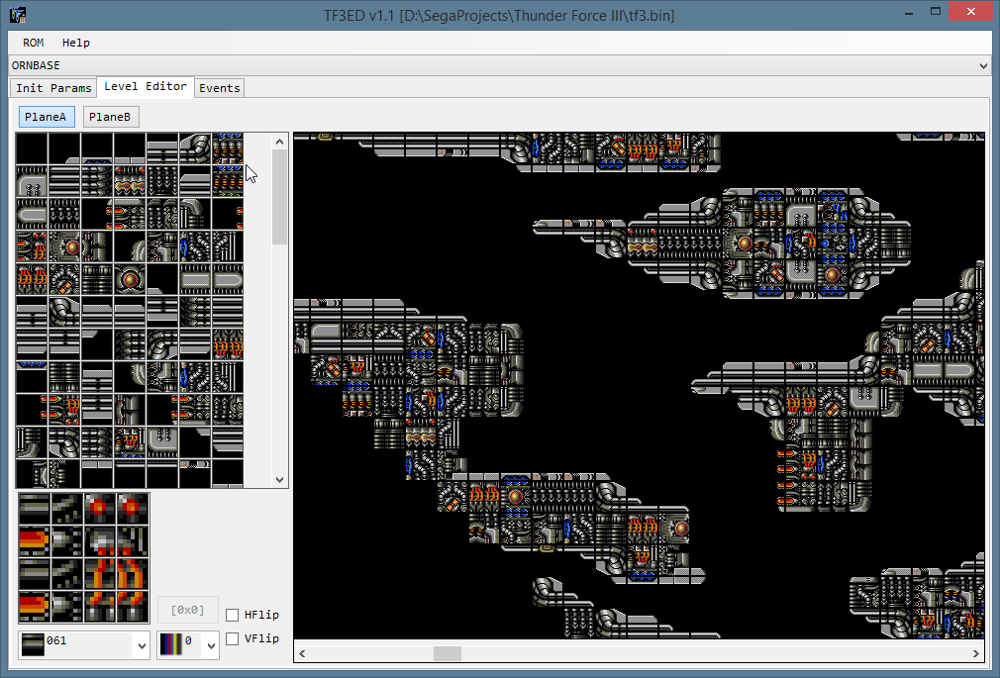
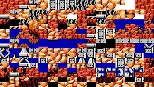

CadEditor - редактор уровней для множества игр под разные платформы (NES, Sega Mega Drive, GBA).
 Основное предназначение - редактирование строения уровней (экранов и блоков),а также изменение размещения положения объектов на них.
Кому может быть интересен редактор
- Исследователи игр и ромхакеры - для изучения строения уровней и создания хаков. В редакторе есть конфиги для всех уровней для нескольких игр, и с его помощью было создано более 10 хаков (Ветка на форуме emu-land, посвящённая созданию хаков с помощью редактора). 
- Разработчики других редакторов уровней для конкретных игр могут использовать редактор в качестве основы для своих проектов. Исходный код CadEditor открыт, также редактор поддерживает добавление модулей для редактирования специфических для игр данных (Описание модулей). На основе CadEditor'а был сделан редактор игры Thunder Force 3. 
- Разработчики homebrew-проектов для платформ NES могут использовать редактор для создания уровней в своих играх. 
Задача редактора на данном этапе - обеспечить возможность подключения к нему игр с разной внутренней архитектурой уровней, а также упростить процесс исследования и подключения к нему игр для конечных пользователей.
Для этой цели редактор поддерживает возможность гибкого задания способа построения уровня в виде динамической загрузки скриптов на языке C# (в комплекте с редактором идут скрипты для большого количества игр, большая часть использует библиотечные функции редактора для загрузки данных из ROM-файлов).
Основные особенности CadEditor
- Расширяемость. Открытый исходный код и формат файлов описания позволяют добавить для редактирования данные для новых игр.
- Гибкость. Конфиги для игр используют язык программирования C#, который позволяет описать данные любой сложности.
- Модульность. Основная часть функций вынесена в плагины, которые можно использовать в разных играх с небольшим количеством изменений, описанных в конфигах. Сам редактор также является модулем, что позволяет использовать его в качестве библиотеки (пример скриптов с использованием CadEditor в языке Python с использованием JupyterCadEditor) для отображения данных об уровнях.
- Работа с несколькими файлами. На базовом уровне редактор позволяет работать одновременно с ROM и файлом дампа данных (для редактирования расжатых данных). Также в конфигах можно загружать данные из отдельных файлов (расжатая видеопамять, палитры, описания врагов и т.п.)
- Большое количество примеров. В настоящий момент в комплекте с редактором идут более 400 конфигов, позволяющих редактировать около 500 разных уровней в более чем 80 играх для платформ NES и SMD.
- Наличие вспомогательных инструментов. Для облегчения процесса создания конфигов для новых игр и работы с поддерживаемыми создано несколько вспомогательных утилит и скриптов. Они часто используют язык программирования Python и используются для таких задач, когда автоматический поиск блоков в играх, создания картинок блоков или декомпрессия сжатых данных из ROM.
- Кроссплатформенность. Хотя основной платформой является Windows, редактор написан с использованием языка C#, и он может быть собран как с использованием .Net Framework, так и с использованием Mono (под Windows или Linux)
Частично реализованы:
- Набор возможностей для удобного редактирования. Блоки можно объединять в виртуальные структуры, для создания "кистей", присутствует ограниченная поддержка 2 слоёв блоков и виртуального рендера данных поверх них, некоторые данные в конфиге возможно менять динамически.
- Экспорт/импорт данных. Присутствует возможность экспорта некоторых видов данных в виде картинок, бинарном или json-формате.
- Документация. Пока практически отсутствует :(
Редактор экранов
Позволяет использовать в качестве базовых блоков:- Построение из ROM различными способами структуры
- Заранее заготовленные картинки (полученные из конкретной игры или нарисованные для своего проекта)
Редактор блоков
- Поддерживает построение иерархии блоков любого количества вложенности.
- Блоки (Tile-Sprite Assembly) любого размера (чаще всего используются блоки 2x2 и 4x4 тайла). Также поддерживается кодирования аттрибутов блоков - индекса палитры и физических свойств блока, или отключение этих аттрибутов блокв для игр, в которых эти данные кодируются другими способами. Для SMD игр поддерживаются блоки размером 2x2 и 4x4 тайла.
- Макроблоки (объединение нескольких блоков в блок большего размера) нескольких уровней, иногда игра использует несколько вложенных видов блоков для описания уровня. Также поддерживается хранения аттрибутов палитры на уровне макроблоков, как они хранятся в некоторых играх
- Описание блоков в разных форматах. Поддержка описание блоков и макроблоков линейно или с определённым шагом, возможно менять порядок описания (слева-направо, сверху-вниз). Кроме того, за счёт использования языка программирования в конфигах, можно описывать любые новые виды хранения блоков (например, предварительно сжатые).
- Описание экранов напрямую маппингами или тайлами без блоков (часто используется для кодирования целого экрана меню или миссии, и в качестве описания фона в играх для SMD).
- Поддержка нескольких отдельных наборов блоков с возможностью переключать их параметры (банки видеопамяти и палитры, а также наборы субблоков) для конкретного отображения состояния блоков в играх с динамически изменяемыми параметрами уровня.
Редактор объектов
- Поддерживает несколько отдельных списков объектов в разных форматах, загружаемых различными способами.
- Поддерживает изменение порядка объектов в списке.
- Игровые объекты могут содержать несколько дополнительных аттрибутов (кодируемых в виде чисел).
- Поддержка маленьких и больших картинок объектов для отображения в редакторе (наборы картинок не идут в комплекте с редактором).
- Пока что имеет много ограничений и полноценно реализованы не все возможности, необходимые для поддержки списков объектов в любой игре.
Дополнительные утилиты
(Часть утилит в дальнейшем будет выделена в отдельные проекты)- Autocorrupter. Lua-скрипт (для nes и smd) для изменения байтов в ROM и ослеживания последствий изменения на экране с помощью создания скриншотов. Также используется для создания набора заготовленных картинок блоков из игр (статья с примером использования для игры Jackal).
- NesBlockFinder. Отдельный проект для автоматического поиска адреса блоков в ROM. Реализован на языке Python.
- SettingsVerifier. Утилита для проверки корректности всех конфигов в папке редактора.
- JupyterCadEditor. Использование редактора CadEditor в качестве библиотеки отображения данных для Python. Примеры используют JupyterNotebook в качестве средства отображения данных. Также присутствуют примеры для декомпресси данных, рендера уровней в играх со сложной структурой, поиска отличий в региональных версиях игр, массированного поиска данных в различных играх и другое.
- Stuff. Мелкие скрипты на Lua и Python для автоматизации и упрощения различных задач, таких как сравнение данных в cdl-файлах, поиск поинтера на данные по их абсолютному адресу, разметки данных в Ida или логгирования данных об игровых архивах с помощью Lua-скриптов.